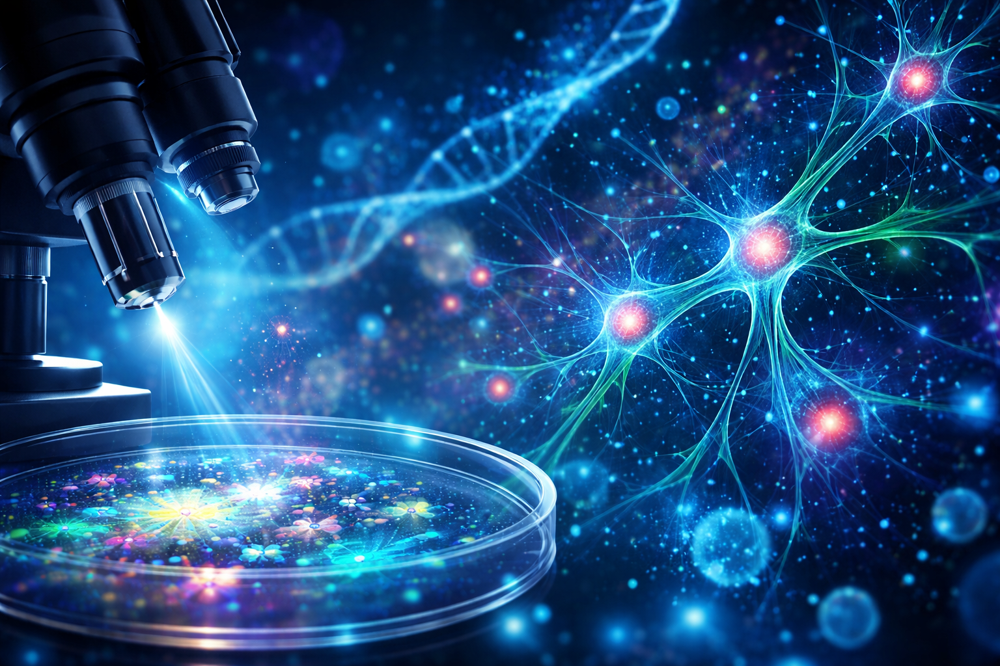

Debdawipayan Maiti
Undergraduate Researcher in Biophysics
BS–MS student at IISER Kolkata with strong interests in the physics of living systems, spanning bacterial biofilms, membrane mechanics, and quantitative microscopy. My work combines wet-lab experimentation, image analysis, and theoretical modeling to understand how physical principles govern cellular and multicellular behavior.
DST–INSPIRE Fellow
